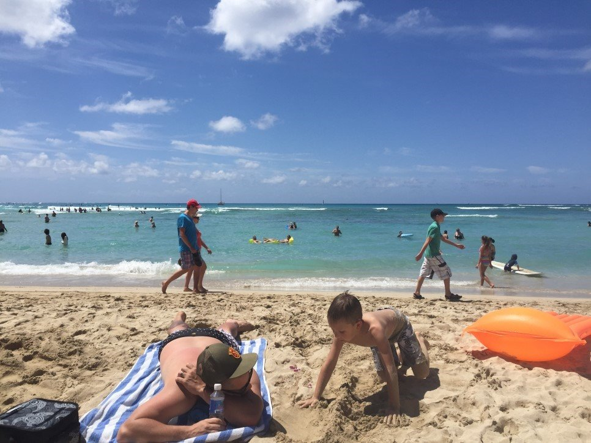
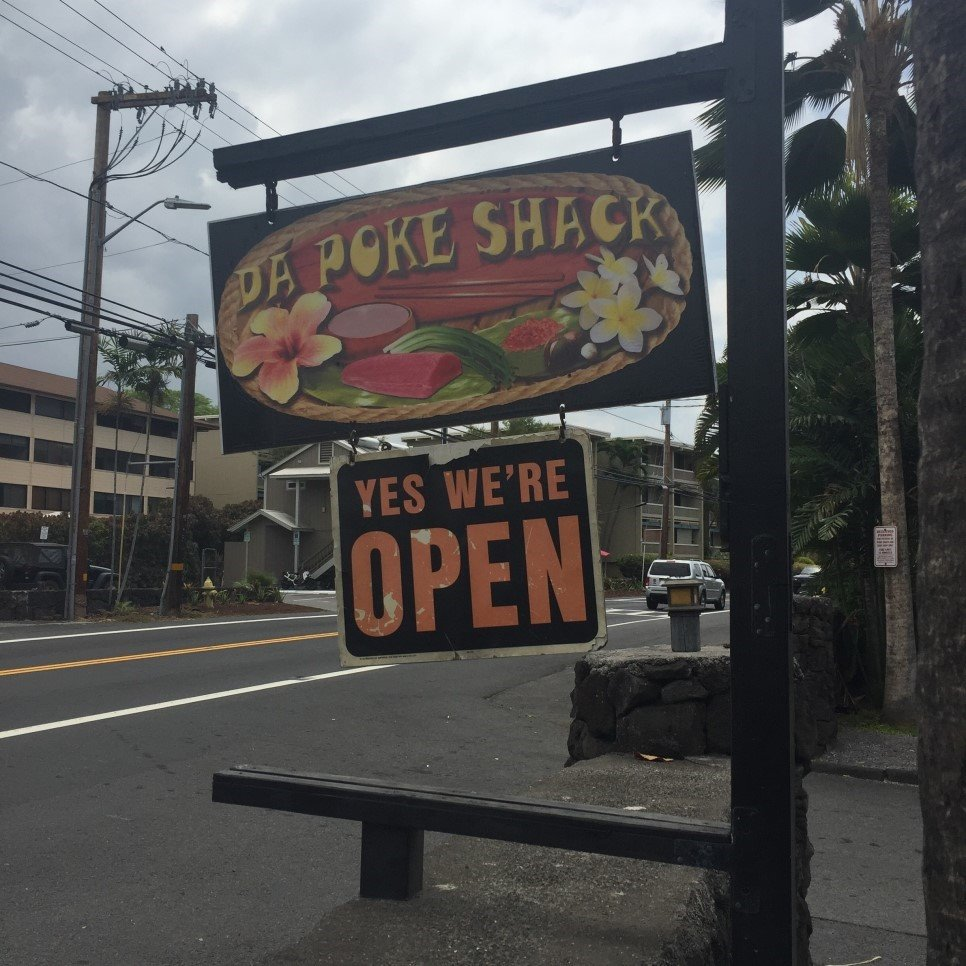
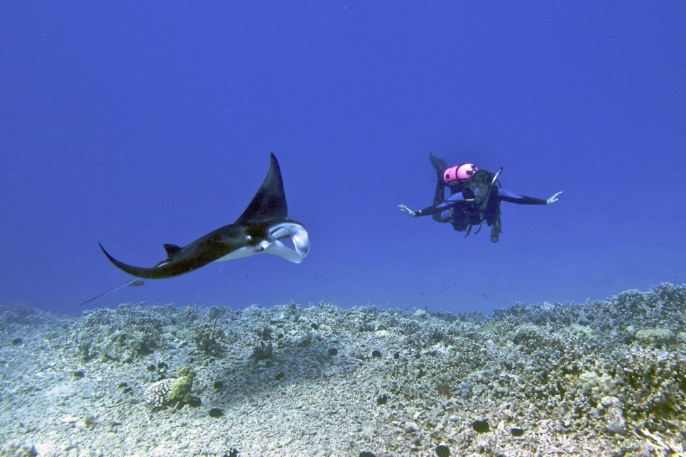
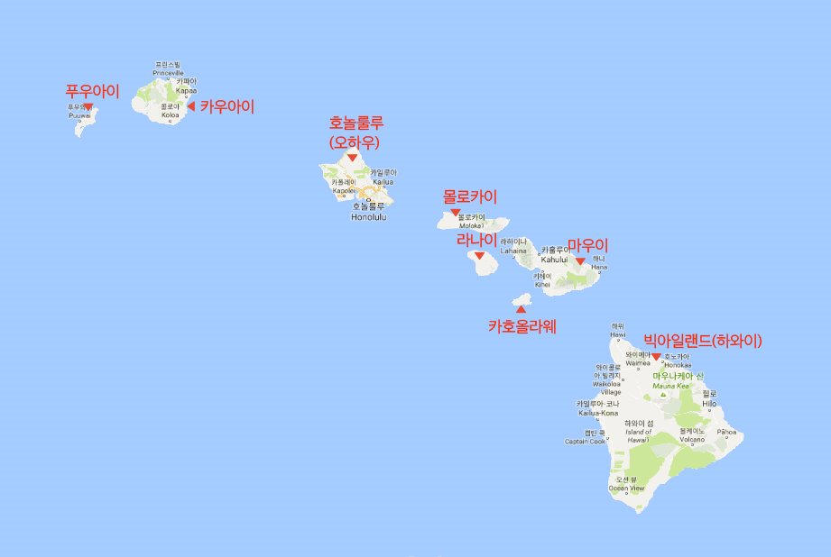
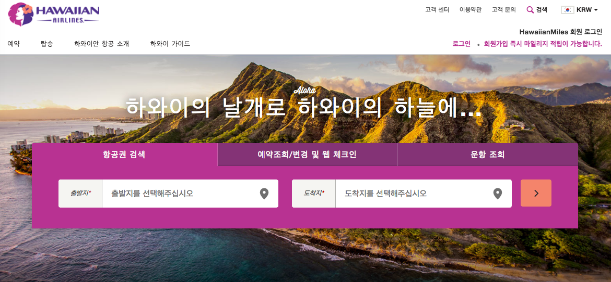

구피 GOOFY Cafe & Dine 1831 Ala Moana Blvd, Honolulu

♥︎ 하와이 오하우에서 해야 할 일 ♥︎
~ 와이키키 해변에서 서핑, 파도 즐기기 ~
와이키키 해변은 파도의 높이가 일정하고 물의 깊이가 얕아서 서핑하러 많이 옵니다. 서핑을 가르쳐주는 곳들이 많아서 레슨을 받아 서핑을 하는 사람들도 많고요. 서핑 레슨은 한두 시간에서부터 반나절 코스가 있으니 다양하게 코스를 골라서 받아보는 것도 좋을 거 같아요. 보통 서핑 레슨을 하는 곳에서 서핑 보드를 렌털도 해주니, 부담 없이 서핑을 해봐도 좋을 거 같네요.아니면 ABC 마켓에서 서핑 보드를 사는 것도 좋습니다.

♥︎ 하와이 빅아일랜드 맛집 ♥︎
다 포케 쉑 Da Ppoke Shack 76-6246 Ali'i Dr #101, Kailua-Kona, HI

♥︎ 하와이 빅아일랜드에서 해야 할 일 ♥︎
~ 만타 레이에서 스쿠버 다이빙하기 ~
스쿠버 다이빙을 하면 사람보다 더 큰 가오리를 볼 수 있는 곳으로 인기가 있지만 예약을 하지 않으면 가기 어려운 곳입니다. 바닷속에서 가오리와 만나는 느낌은 어디에서나 할 수 없는 큰 즐거움일 거 같네요.

♥︎ 하와이 섬 이야기 ♥︎
~ 하와이의 8개의 섬 ~
하와이는 8개의 큰 섬과 작은 100여 개의 섬으로 이루어진 미국의 50번째 주입니다. 원래는 폴리네시아 민족의 땅으로 왕족이 통치하고 있었으나 사탕수수와 군대를 앞세워 미국이 식민지로 만들었고, 1959년 8월 21일, 마침내 미국의 영토로 편입되게 됩니다. 미국 영토이기 때문에 미국인들은 우리나라에서 제주도처럼 관광을 목적으로 오는 곳이기도 합니다. 하지만 하와이 원주민도 엄연히 살고 있는 곳이죠. 많은 하와이인들은 혼혈이 되거나 아니면 작은 부락을 이루면서 살고 있습니다.

♥︎ 하와이안 항공 이야기 ♥︎
하와이 여행을 떠날 때 먼저 고민하는게 아마 비행기 티켓일 텐데요. 대한항공, 아시아나 항공이나 진에어를 이용하시는 분들도 있겠지만 하와이 여행에서 오하우 외 다른 섬을 이용하실 경우에는 하와이안 항공을 이용하시는 편이 좋습니다.